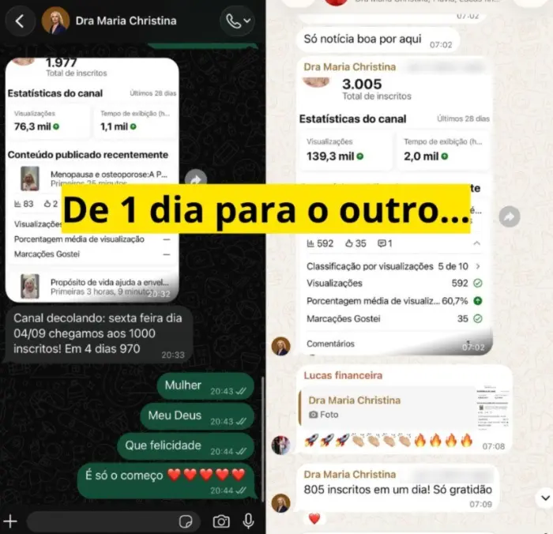
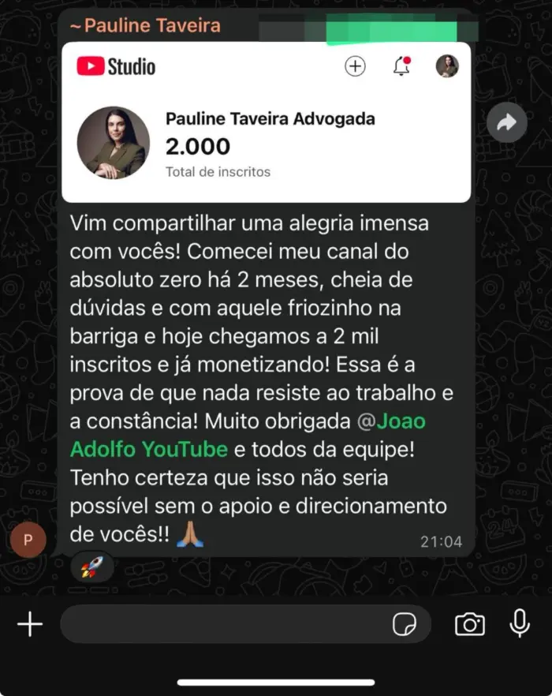
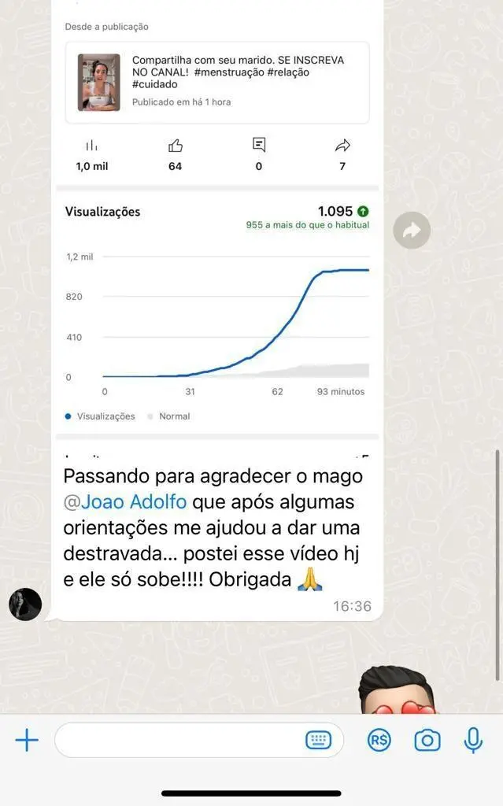
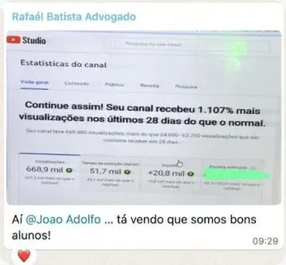
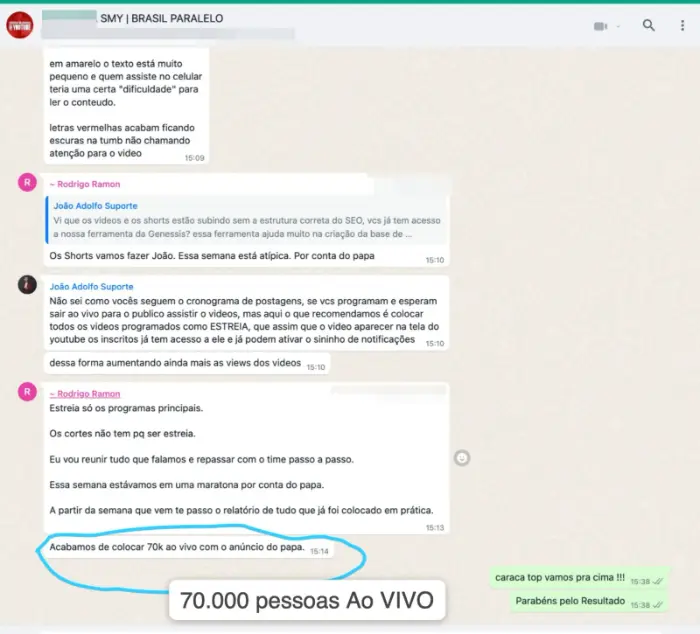

Essa oferta promocional vai sair do ar nos próximos dias!
Tenha acesso ao meu CHECKLIST COMPLETO de postagem, com todas as 7 etapas necessárias, modelos de título e descrição prontos para COPIAR e COLAR!!
Seus vídeos não crescem e travam porque você posta errado! Resolva isso agora.

São 7 etapas de conferência prontas para você replicar, para o YouTube entender e recomendar muito mais o seu vídeo. Gerando muito mais visualizações, te posicionando nas primeiras buscas e entregando seu vídeo por anos.
R$47 à vista ou 10x de R$5,57
Veja tudo o que você recebe no Checklist Posta Certo

Checklist versão Computador e Celular
O passo a passo na ordem das telas do YouTube Studio no computador ou no celular, com print de cada etapa de postagem.

Checklist completo: com todas as etapas
Todos os itens para conferência, é só bater o olho e publicar.

Template de Descrição
A estrutura pronta para copiar e colar e seus vídeos ranquearem melhor, com exemplo preenchido.

Modelos de Título
Os padrões que usamos nos canais, com exemplos em nichos diferentes.

De R$147 por R$47 à vista ou 10x de R$5,57
O passo a passo visual para colocar seus vídeos no ar sem fazer no chute, do primeiro vídeo em diante.
Em vez de ficar alternando entre o YouTube, o Google, um tutorial de 40 minutos e a inteligência artificial, você segue a publicação em ordem. Tela por tela, item por item.

Passo 1
Abriu
Abre o checklist de um lado e o YouTube Studio do outro. Nada para decorar, nada para estudar antes.

Passo 2
Conferiu
O checklist segue exatamente a ordem das telas do YouTube. Você desce junto, confere item por item e marca. Cada item tem o print da tela real, então você bate o olho e acha na hora onde fica cada coisa.

Passo 3
Publicou
No fim, uma folha única para revisar tudo de uma vez. Marcou tudo? Pode programar o vídeo e fechar o computador.
Acesso imediato · Garantia de 7 dias
Agora imagine o contrário…
Seu vídeo trabalhando por você todos os dias!
É isso que acontece quando o YouTube entende do que é o seu vídeo e sabe para quem mostrar:
Seu vídeo nas primeiras buscas
Quem pesquisa o seu assunto encontra você primeiro.
Visualizações chegando todo dia
Mesmo semanas e meses depois de publicar.
Inscritos novos sem você pedir
Gente que chegou pelo vídeo e ficou pelo canal.
Seus vídeos virando renda no automático
Views que se acumulam e podem gerar dinheiro enquanto você grava o próximo.
O vídeo você já faz. Postar do jeito certo é o que faz ele ser visto.
R$47 à vista ou 10x de R$5,57
Seu vídeo usou do seu tempo para ficar pronto. Não publique ele de qualquer jeito.
No vídeo, você investe
- Pensar o tema
- Escrever o roteiro
- Gravar e regravar
- Editar
- Fazer a capa
Na postagem, você gasta
2 minutos
- Sobe o arquivo
- Escreve um título qualquer
- Pula as configurações
- Aperta Publicar
A parte mais trabalhosa recebe toda a sua atenção. E a última, aquela que decide o que o YouTube vai entender do seu vídeo e para quem vai mostrar, acaba feita correndo.
Não faz sentido deixar justamente essa parte no improviso.
Leva 2 minutos para garantir · Acesso na hora
Essa é a mesma sequência que o meu time confere, vídeo por vídeo, nos canais que acompanha
Os resultados abaixo são de canais e alunos acompanhados pela nossa equipe. Toda essa experiência prática é o que está organizado dentro do checklist.








A mesma sequência desses canais, por R$47

Criador do Checklist Posta Certo no YouTube
João Adolfo
Sou dono do maior canal de finanças pessoais para aposentados do Brasil, com mais de 2,5 milhões de inscritos. Somando os meus 21 canais no YouTube e as outras redes, são mais de 7 milhões de seguidores.
À frente da JA Educação, eu e o meu time já ajudamos mais de 15 mil alunos e acompanhamos de perto mais de 400 canais, que juntos passam de 50 milhões de inscritos e 7 bilhões de visualizações. Entre eles estão canais como o do Brasil Paralelo.
Esse checklist não é teoria. É a sequência que a gente confere, vídeo por vídeo, nesses canais.
+2,5 mi
inscritos no canal principal
+7 mi
seguidores somando 21 canais e redes
+15 mil
alunos
+400
canais acompanhados

Testado em +400 canais · Garantia de 7 dias
Com esse passo a passo, você vai:
- Saber qual é o próximo passo, mesmo que nunca tenha publicado um vídeo.
- Parar de achar que precisa aprender tudo antes de começar.
- Achar cada configuração pelo print, sem ficar caçando na tela.
- Saber o que preencher, o que conferir e o que pode ignorar.
- Parar de pesquisar a mesma dúvida toda vez que publica.
- Descobrir as configurações escondidas dentro do Mostrar mais, que muita gente nunca abriu.
- Ter uma estrutura pronta para a descrição e modelos prontos de título.
- Transformar a postagem em rotina e parar de depender da memória.
- Terminar a publicação sabendo que conferiu tudo o que estava sob o seu controle.
De R$147 por R$47 · Oferta por tempo limitado
O Checklist Posta Certo é para você que:
- Sabe que deveria estar no YouTube, mas continua adiando.
- Quer começar e não sabe qual é o primeiro passo.
- Já criou o canal e ainda não publicou nada.
- Vai colocar o primeiro vídeo no ar e não quer começar no chute.
- Já publica, mas faz cada postagem de um jeito.
- Abre o YouTube Studio e não sabe o que marcar.
- Tem medo de esquecer alguma configuração e prejudicar o próprio vídeo.
E não é para você que:
- Procura promessa de dinheiro fácil.
- Quer garantia de viralização.
- Acha que um checklist substitui conteúdo bom.
- Acredita que existe configuração mágica que obriga o YouTube a entregar vídeo.
- Não pretende produzir nenhum conteúdo.
Checklist Posta Certo no YouTube
De R$147 por apenas
R$47,00
à vista ou 10x de R$5,57 no cartão
Sim! Quero começar hoje7
dias
Garantia incondicional de 7 dias
Entre, abra tudo, use na sua próxima postagem. Se achar que não era para você, pede o reembolso dentro de 7 dias e devolvemos o valor. Sem pergunta, sem justificativa, sem formulário.